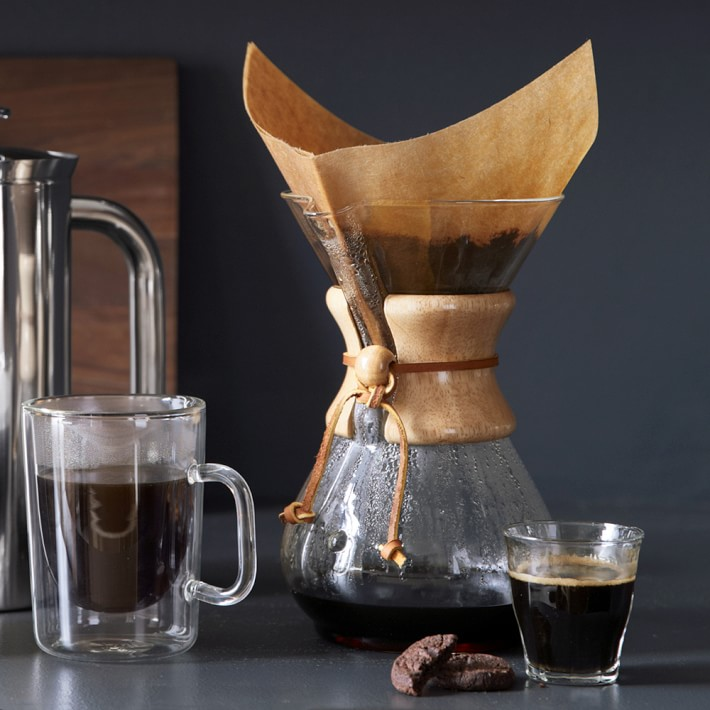

Let me share a story from my own life of how I came up with the idea behind bruw. I love coffee, and so does my spouse, but in the mornings we had to fight over who's turn it is to make it. And when you want that perfect cup of freshly brewed coffee, you would want the brewing process to be easy aswell. A few years before we'd use those standard automatic coffee makers with coffee from the grocery store. At one point, after traveling many countries and trying out premium coffees, I decided that I want to be able to make it at home. I bought the classic equipment like Chemex, V60, the goose neck pourover and a scale. Then I started to experiment. I used my phone's timer and wrote down how long the coffee should bloom, how many grams of grounded coffee I should use, and how many times I would have to pour and wait. This process was gruesome and I (literally) burned the coffee, my money and time. After some time experimenting and searching through the internet I came up with a counting formula for a pretty good brew. Now the next step was to teach my spouse how to make that perfect cup. This process was, again, tiresome and it required me to help and supervise her so the coffee wouldn’t get burned. Our frustration grew. I thought there has to be another way. Since my background is in engineering, and I am working as a software developer I started to sketch on an app that would do all the counting for me. My wish was that you would only have to put in the amount of coffee that you want as an end product, for example one cup or 500 mL (17oz). The app would count the amount of coffee beans required, with a few other parameters such as brewing method, temperature and bean type. That's how Bruw was born :).
